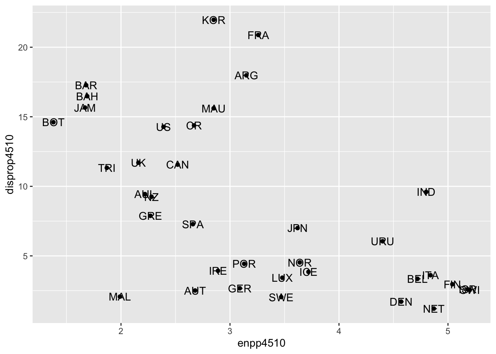

Politikwissenschaftliche Statistik mit R. Sitzung 9: Visualisierung (II) Zusammenhangsmaße
Christoph Garwe, Philipp Meyer, Laura Brune und Christoph Hönnige
Institut für Politikwissenschaft, Leibniz Universität Hannover1. Einleitung
In unserem letzten Tutorial haben wir uns mit der bivariaten linearen Regression beschäftigt und den Zusammenhang zwischen effektiver Parteienanzahl und Wahlsystemdisproportionalität untersucht. Zusätzlich haben wir bereits eine einfache Visualiserung der Residuen realisiert. In diesem Tutorial werden wir an diesem Punkt ansetzen und weitere Visualisierungsmöglichkeiten besprechen. Zusätzlich werden wir lernen, wie man das Aussehen von Graphen (Hintergrundfarbe, Farben, Beschriftungen u.v.m) nach eigenen Wünschen gestalten kann.
2. Pakete laden, Daten einlesen und Variablen transformieren
Wir laden in einem ersten Schritt die Pakete, die wir für dieses Tutorial brauchen. Da wir uns in diesem Tutorial nur mit der Visualisierung von Zusammenhängen auseinandersetzen, werden wir lediglich das ggplot2-Paket verwenden. Anschließend laden wir den Lijphart-Datensatz und transformieren einige Variablen, damit diese der von uns gewünschten Klasse (numerische Variablen) angehören.
# Pakete laden
library(ggplot2) # Das Paket wird in Punkt 4 dieses Tutorials verwendet# Datensatz laden
getwd()
setwd("eigener Pfad")
lijphart <- read.csv2("Lijphart_Data_recode.csv")# Lijphart
# ENPP
lijphart$enpp4510 <- as.numeric(lijphart$enpp4510)
# Gallagher-Index
lijphart$disprop4510 <- as.numeric(lijphart$disprop4510)
# Bikameralismus-Index
lijphart$bicam4510 <- as.numeric(lijphart$bicam4510)
# Minimal-Gewinn-Koalition mit einer Partei
lijphart$minwin_one_part4510 <- as.numeric(lijphart$minwin_one_part4510)
# Exekutivdominanz (Kabinettsdauer)
lijphart$exe_dom4510 <- as.numeric(lijphart$exe_dom4510)3. Visualisierung von Zusammenhängen
Zusammenhänge lassen sich mit vielen unterschiedlichen Graphen präsentieren. Zwei dieser Möglichkeiten werden wir im Folgenden besprechen: Streudiagramme und Linienplots.
Wie bereits in Sitzung 6 werden wir unsere Visualisierungen mit dem ggplot2-Paket realisieren. Für die Darstellung von Zusammenhängen werden wir vor allem die ggplot()-Funktion und geom_point() verwenden.
Wie bereits oben erwähnt, werden wir unsere Visualisierungen mit den Variablen enpp4510 und disprop4510 durchführen.
3.1 Streudiagramme
Wollen wir den Zusammenhang zwischen der effektiven Parteienanzahl und der Wahlsystemdisproportionalität darstellen, dann bietet sich ein Streudiagramm an. Hierfür verwenden wir die Funktion geom_point().
ggplot(lijphart, aes(x = enpp4510, y = disprop4510)) +
geom_point()Wollen wir wissen, welche Länder sich hinter den Punkten verstecken, dann können wir mittels geom_text() und der Variable Country ganz einfach Beschriftungen hinzufügen:
ggplot(lijphart, aes(x = enpp4510, y = disprop4510)) +
geom_point() +
geom_text(label = lijphart$Country)
3.2 Linienplots
Die Aussagekraft lässt sich noch erweitern, wenn wir eine Regressionslinie hinzufügen. Zur kurzen Erinnerung: In Sitzung 8 haben wir eine bivariate Regression zwischen der ENPP und dem Gallagher-Index gerechnet und herausgefunden, dass beide Variablen signifikant negativ zusammenhängen. Um das auch grafisch darzustellen, nutzen wir die Funktion geom_smooth() und bestimmen mit method = lm, dass wir eine lineare Regressionsgerade visualisieren wollen.
ggplot(lijphart, aes(x = enpp4510, y = disprop4510)) +
geom_point() +
geom_smooth(method = lm)# Eine alternative Schreibweise bietet das Tilde (~) Zeichen, welches wir bereits aus dem Tutorial zur bivariaten OLS Regression kennen
# ggplot(lijphart, aes(enpp4510 ~ disprop4510)) +
# geom_point() +
# geom_smooth(method = lm)Wie wir sehen können, werden die Konfidenzintervalle automatisch visualisiert. Wollen wir das nicht, dann können wir das wie folgt bestimmen:
ggplot(lijphart, aes(x = enpp4510, y = disprop4510)) +
geom_point() +
geom_smooth(method = lm, se = FALSE)In einem letzten Schritt beschriften wir die Punkte mit den dazugehörigen Ländernamen. Hierfür verwenden wir wieder die Funktion geom_text() und die Variable Country, zusätzlich justieren wir mit hjust und vjust die Platzierung der Beschriftungen und garantieren so eine bessere Lesbarkeit:
ggplot(lijphart, aes(x = enpp4510, y = disprop4510)) +
geom_point() +
geom_smooth(method = lm) +
geom_text(label = lijphart$Country, hjust = 0, vjust = 0)4. Graphen verändern
Wollen wir das Aussehen unserer Graphen verändern, dann bietet uns ggplot2 nahezu unendlich viele Möglichkeiten. Einige davon werden in den folgenden Unterkapitels präsentiert, andere findet ihr natürlich mittels der help-Funktion ? oder aber über die ggplot2-Homepage.
4.1 Beschriftungen
ggplot2 macht die Benennung eines Graphen sehr einfach. Hierfür verwenden wir die Funktion labs() und setzen unsere gewünschte Beschriftung in Anführungszeichen:
ggplot(lijphart, aes(x = enpp4510, y = disprop4510)) +
geom_point() +
geom_smooth(method = lm) +
geom_text(label = lijphart$Country, hjust = 0, vjust = 0) +
labs(title = "Zusammenhang zwischen ENPP und Gallagher-Index",
x ="Effektive Parteienanzahl", y = "Disproportionalität von Wahlsystemen")4.2 Hintergrund-Themes
ggplot2 bietet unterschiedliche Hintergrund-Themes an. Zusätzlich bietet das Paket ggthemes weitere Möglichkeiten. Die folgende Tabelle bietet einen kleinen Überblick über mögliche Themes.
| Funktion | Paket | Beschreibung |
|---|---|---|
| theme_bw() | ggplot2 | Schwarze Elemente auf weißem Hintergrund |
| theme_minimal() | ggplot2 | Minimalistisch |
| theme_classic() | ggplot2 | Theme ohne grid Linien |
| theme_base() | ggthemes | Basis Theme |
| theme_economist() | ggthemes | The Economist Theme |
| theme_fivethirtyeight() | ggthemes | FiveThirtyEight Theme |
| theme_tufte() | ggthemes | Tufte (1983) theme |
Die Veränderung des Hintergrunds ist denkbar einfach. Hierfür müssen wir einfach die jeweilige Theme-Funktion verwenden:
# Minimal Theme
ggplot(lijphart, aes(x = enpp4510, y = disprop4510)) +
geom_point() +
geom_smooth(method = lm) +
geom_text(label = lijphart$Country, hjust = 0, vjust = 0) +
labs(title = "Zusammenhang zwischen ENPP und Gallagher-Index"
, x ="Effektive Parteienanzahl"
, y = "Disproportionalität von Wahlsystemen") +
theme_minimal() # The Economist
library(ggthemes) # für dieses Theme brauchen wir ein weiteres Paket
ggplot(lijphart, aes(x = enpp4510, y = disprop4510)) +
geom_point() +
geom_smooth(method = lm) +
geom_text(label = lijphart$Country, hjust = 0, vjust = 0) +
labs(title = "Zusammenhang zwischen ENPP und Gallagher-Index"
, x ="Effektive Parteienanzahl"
, y = "Disproportionalität von Wahlsystemen") +
theme_economist() 
4.3 Farben
Wenn wir die Farben der Datenpunkte verändern wollen, dann müssen wir lediglich das Argument color in die geom_point() Funktion einbauen. Gleiches gilt für die Form der Punkte, wobei wir hier das Argument shape verwenden (die einzelnen Formen können über die Ziffern 1-20 ausgewählt werden):
ggplot(lijphart, aes(x = enpp4510, y = disprop4510)) +
geom_point(shape = 18, color = "blue") + # Form und Farbe der Punkte verändern
geom_smooth(method = lm) +
geom_text(label = lijphart$Country, hjust = 0, vjust = 0) +
labs(title = "Zusammenhang zwischen ENPP und Gallagher-Index"
, x ="Effektive Parteienanzahl"
, y = "Disproportionalität von Wahlsystemen") +
theme_minimal() Die Schritte sind ähnlich wenn wir die Form, Farbe und Füllung unsere Regressionslinie verändern möchten:
ggplot(lijphart, aes(x = enpp4510, y = disprop4510)) +
geom_point(shape = 18, color = "blue") +
geom_smooth(method = lm, linetype = "dashed",
color = "darkred", fill = "blue") + # Form und Aussehen der Regressionslinie und Füllung der Konfidenzintervalle verändern
geom_text(label = lijphart$Country, hjust = 0, vjust = 0) +
labs(title = "Zusammenhang zwischen ENPP und Gallagher-Index"
, x ="Effektive Parteienanzahl"
, y = "Disproportionalität von Wahlsystemen") +
theme_minimal()4.4 Einen Plot speichern
Wenn wir einen Plot erstellt haben, den wir speichern möchten, können wir die Funktion ggsave() verwenden. Die Benennung der Datei bestimmen wir, indem wir Anführungszeichen verwenden. Beachten Sie, dass damit nur die zuletzt erstellte Darstellung gespeichert wird.
ggsave("fig1-ENPP_Gallagher.png")Die Abbildung wird in Ihrem Arbeitsverzeichnis gespeichert. Der Dateityp .png kann durch ein beliebiges Format (z.B. .jpg) ersetzt werden.
Haben wir unsere Abbildungen in einem Objekt gespeichert, können wir die Graphen speichern, indem wir den Objektnamen vor dem Dateinamen angeben. Dieses Vorgehen hat vor allem bei vielen Graphen Vorteile, da wir so effizient einzelne Visualisierungen ansteuern können.
# Graph wird im Objekt "ENPP_Gallagher" gespeichert:
ENPP_Gallagher <- ggplot(lijphart, aes(x = enpp4510, y = disprop4510)) +
geom_point(shape = 18, color = "blue") +
geom_smooth(method = lm, linetype = "dashed",
color = "darkred", fill = "blue") + # Form und Aussehen der Regressionslinie und Füllung der Konfidenzintervalle verändern
geom_text(label = lijphart$Country, hjust = 0, vjust = 0) +
labs(title = "Zusammenhang zwischen ENPP und Gallagher-Index"
, x ="Effektive Parteienanzahl"
, y = "Disproportionalität von Wahlsystemen") +
theme_minimal()
# Den Graphen als Datei in unserem Arbeitsverzeichnis speichern
ggsave(ENPP_Gallagher, "fig1-ENPP_Gallagher.png")Sie werden feststellen, dass Sie mit der Größe Ihres Graphs nicht ganz zufrieden sind. Um das zu ändern, können wir die Breite und Höhe der zu speichernden Graphen verändern:
ggsave(ENPP_Gallagher, "fig1-ENPP_Gallagher.png", width = 4, height = 4)5. Zusammenfassung
Das ggplot2-Paket gibt uns eine Vielzahl an unterschiedlichen Möglichkeiten zur Visualisierung von Daten und Analyseergebnissen. In diesem Tutorial haben wir neben dem visualisieren von Linienplots und Streudiagrammen vor allem gelernt, wie wir das Erscheinungsbild unserer Plots (Farben, Achsenbeschriftungen, Hintergrund) verändern können.
Wenn Sie eigene Grafiken im Rahmen einer Hausarbeit erstellen möchten, werden Sie zusätzliche Funktionen und Argumente recherchieren müssen. Dazu sei auf ?ggplot und die Hilfefunktion zu einzelnen (Geom-)Funktionen, sowie auf https://ggplot2.tidyverse.org/ und das dort verfügbare “Cheatsheet” hingewiesen.
6. Aufgaben
Bearbeiten Sie bitte die folgenden Aufgaben bis zur kommenden Sitzung:
- Repliziert Sie alle hier gezeigten Graphen mit den Variablen Kabinettstyp - bicam4510 - und Regierungsdauer - exe_dom4510.
- Erstellten Sie einen Graphen mit einer Loess-Linie anstelle einer Regressionsgeraden.
- Verwenden Sie andere Hintergrund-Themes als die gezeigten.
- Finden Sie heraus, wie Sie die Skalierung der x-Achse und y-Achse verändern und wenden Sie das neue Wissen an einem Ihrer Graphen an.
- Speichern Sie einen Graphen als .jpg und einen als .pdf.